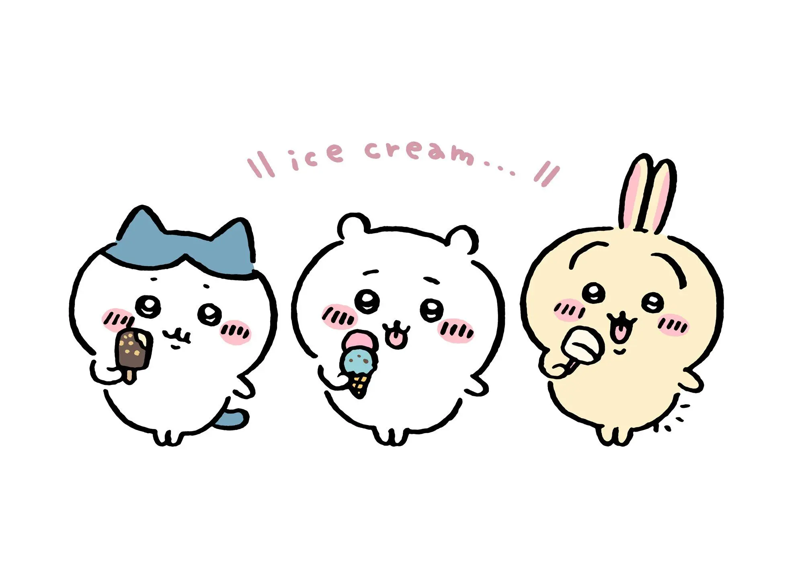

토벌 알바생 소개
먼작귀
먼작귀는 작고 동그란 몸에 큰 귀가 특징인 귀여운 생물입니다. 호기심 많고 사랑스러운 성격으로 많은 사람들에게 사랑받고 있어요.
하치와레

하치와레는 파란 가르마가 특징인 턱시도 고양이로, 먼작귀의 친구이자 밝고 긍정적인 성격을 가진 귀여운 캐릭터입니다.
치이카와

치이카와는 작고 하얀 몸에 큰 눈이 특징인 귀여운 캐릭터입니다. 순수하고 천진난만한 모습으로 많은 팬들의 마음을 사로잡았어요.
우사기

우사기는 긴 귀와 폭신한 털이 특징인 토끼 캐릭터입니다. 조용하고 사려 깊은 성격으로, 다른 캐릭터들과 좋은 친구 관계를 유지하고 있습니다.